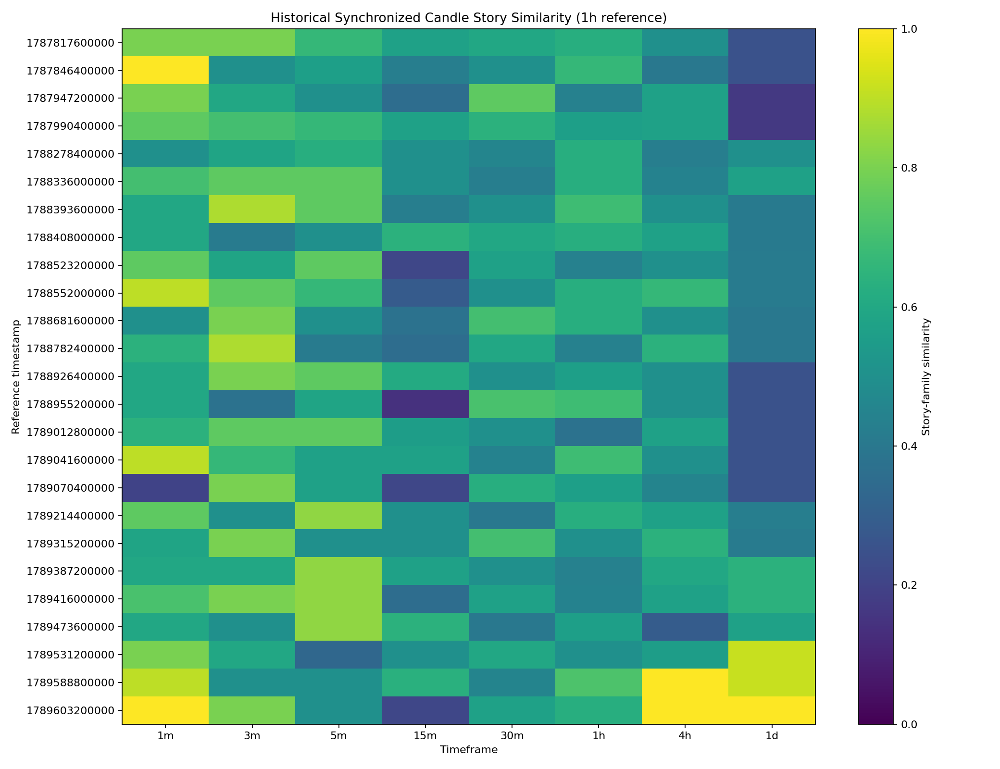
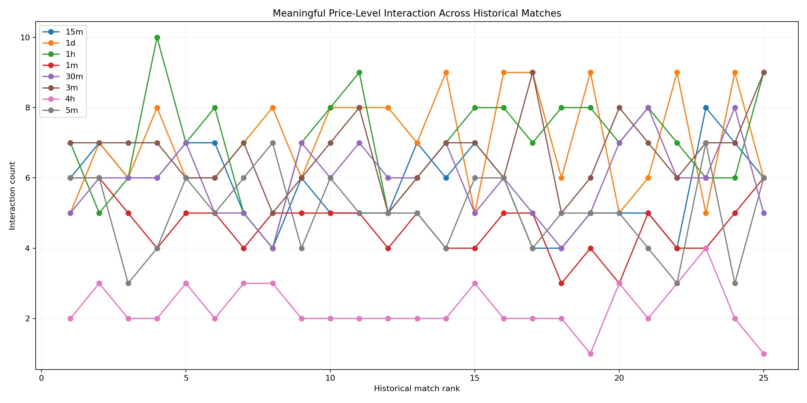
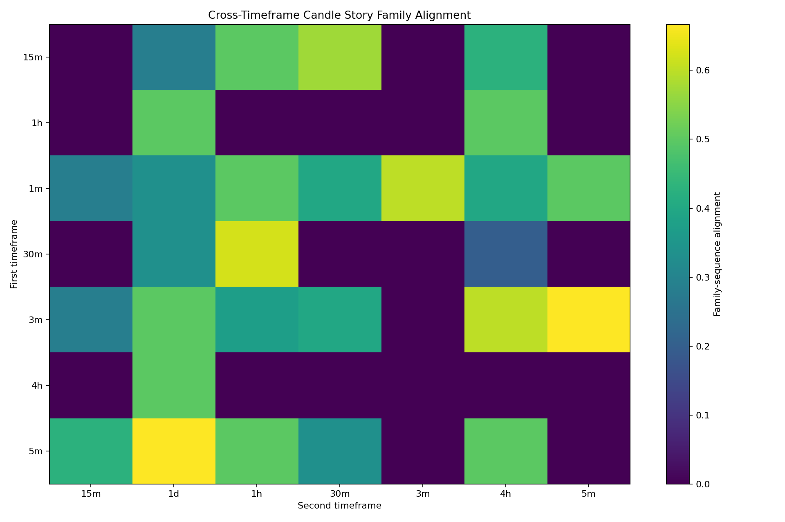

Asset
ETH/USDT
Timeframes
8
1m → 1d
Current window
20
candles per timeframe
Hourly synchronized history
125
historical states
What this dashboard is doing
🕯️ Candle behaviour
Reads body size, range, direction, wicks, close location, compression and expansion.
📖 Candle story
Turns individual candle behaviour into an easier sequence of phases such as range change, rejection and expansion.
📍 Price levels
Shows meaningful level tests, holds, rejection, pullback and repeated tests.
🌐 Multi-timeframe
Aligns 1m–4h exactly and attaches the latest completed 1d context in the hourly replay.
Important
This is a descriptive research dashboard. Similarity and recurrence numbers describe historical structure; they are not trading signals, forecasts, probabilities, entries, targets or stops.
Current candle stories
Loading…
Current multi-timeframe view
Current story by timeframe
Historical story matches
Historical synchronized replay
Reference
1h
Core synchronization
1m–4h
Higher context
1d
Alignment gap
0 ms
Top historical synchronized states
Story similarity map

Current price-level behaviour
Price-level research map

Current candle transitions
Research maps
Candle transition map

Story transition map
